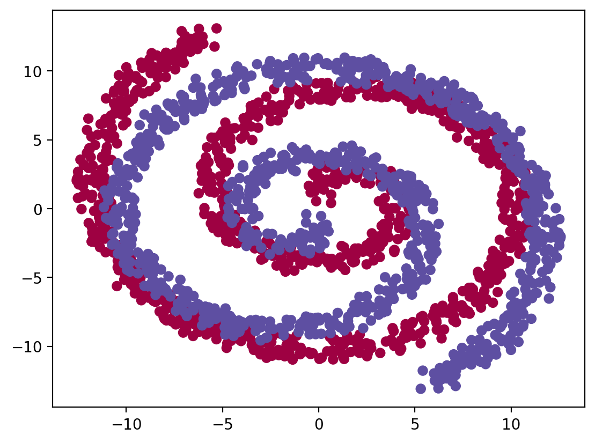
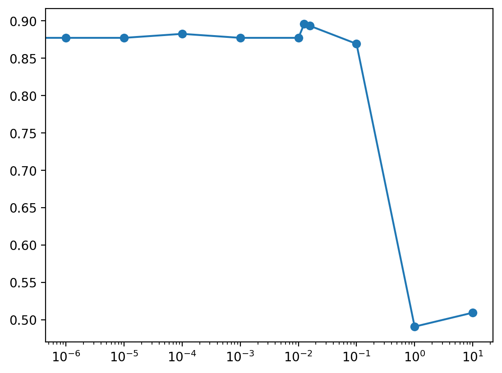

import torch
import matplotlib.pyplot as plt
import torch.distributions as dist
import copy
from functools import partial
# Matplotlib retina
%config InlineBackend.figure_format = 'retina'
from sklearn.metrics import accuracy_score
import torch.nn.functional as F
import pandas as pd
import numpy as npBayesOpt Motivation
# From: https://glowingpython.blogspot.com/2017/04/solving-two-spirals-problem-with-keras.html
def twospirals(n_points, noise=1.7):
"""
Returns the two spirals dataset.
"""
n = np.sqrt(np.random.rand(n_points,1)) * 780 * (2*np.pi)/360
d1x = -np.cos(n)*n + np.random.rand(n_points,1) * noise
d1y = np.sin(n)*n + np.random.rand(n_points,1) * noise
return (np.vstack((np.hstack((d1x,d1y)),np.hstack((-d1x,-d1y)))),
np.hstack((np.zeros(n_points),np.ones(n_points))))
X, y = twospirals(1000)
plt.scatter(X[:,0], X[:,1], c=y, cmap=plt.cm.Spectral)<matplotlib.collections.PathCollection at 0x7f382737a190>
# Divide the dataset into train, test and validation
from sklearn.model_selection import train_test_split
X_train, X_test, y_train, y_test = train_test_split(X, y, random_state=0)
X_train, X_val, y_train, y_val = train_test_split(X_train, y_train, random_state=0)X_train.shape, X_test.shape, X_val.shape((1125, 2), (500, 2), (375, 2))# Move to torch tensors
X_train = torch.tensor(X_train, dtype=torch.float)
y_train = torch.tensor(y_train, dtype=torch.float)
X_test = torch.tensor(X_test, dtype=torch.float)
y_test = torch.tensor(y_test, dtype=torch.float)
X_val = torch.tensor(X_val, dtype=torch.float)
y_val = torch.tensor(y_val, dtype=torch.float)# Create a simple MLP with hyperparameter being the regularization strength
class SimpleMLP(torch.nn.Module):
def __init__(self, input_dim, hidden_dim, output_dim):
super(SimpleMLP, self).__init__()
self.fc1 = torch.nn.Linear(input_dim, hidden_dim)
self.fc2 = torch.nn.Linear(hidden_dim, hidden_dim)
self.fc3 = torch.nn.Linear(hidden_dim, output_dim)
def forward(self, x):
x = torch.sin(self.fc1(x))
x = torch.sin(self.fc2(x))
x = self.fc3(x)
return ximport torch.nn.functional as F
import torch.optim as optim
# Define a function to train and evaluate a model with a given regularization rate
def train_and_evaluate_model(lam):
model = SimpleMLP(input_dim=2, hidden_dim=80, output_dim=1)
optimizer = optim.Adam(model.parameters(), lr=0.001)
criterion = torch.nn.BCEWithLogitsLoss()
epochs = 500
for epoch in range(epochs):
# Forward pass
outputs = model(X_train)
loss = criterion(outputs, y_train.unsqueeze(1))
# L2 regularization
l2_reg = torch.tensor(0.)
for param in model.parameters():
l2_reg += torch.norm(param)
loss += lam * l2_reg
# Backward pass and optimization
optimizer.zero_grad()
loss.backward()
optimizer.step()
# Evaluate on validation set
with torch.no_grad():
val_outputs = model(X_val)
val_preds = torch.round(torch.sigmoid(val_outputs))
accuracy = accuracy_score(y_val.numpy(), val_preds.numpy())
return accuracy# Define a range of regularization rates to try
log_reg_rates = [-1000, -6, -5, -4, -3, -2, -1.9, -1.8, -1, 0, 1]
reg_rates = [10**x for x in log_reg_rates]
accuracies= {}
# Train and evaluate models for each regularization rate
for lam in reg_rates:
accuracy = train_and_evaluate_model(lam)
accuracies[lam] = accuracy
print(f'Regularization Rate: {lam}, Validation Accuracy: {accuracy}')Regularization Rate: 0.0, Validation Accuracy: 0.872
Regularization Rate: 1e-06, Validation Accuracy: 0.8773333333333333
Regularization Rate: 1e-05, Validation Accuracy: 0.8773333333333333
Regularization Rate: 0.0001, Validation Accuracy: 0.8826666666666667
Regularization Rate: 0.001, Validation Accuracy: 0.8773333333333333
Regularization Rate: 0.01, Validation Accuracy: 0.8773333333333333
Regularization Rate: 0.012589254117941675, Validation Accuracy: 0.896
Regularization Rate: 0.015848931924611134, Validation Accuracy: 0.8933333333333333
Regularization Rate: 0.1, Validation Accuracy: 0.8693333333333333
Regularization Rate: 1, Validation Accuracy: 0.49066666666666664
Regularization Rate: 10, Validation Accuracy: 0.5093333333333333ser = pd.Series(accuracies)
ser.plot(logx=True, style='o-')<AxesSubplot:>